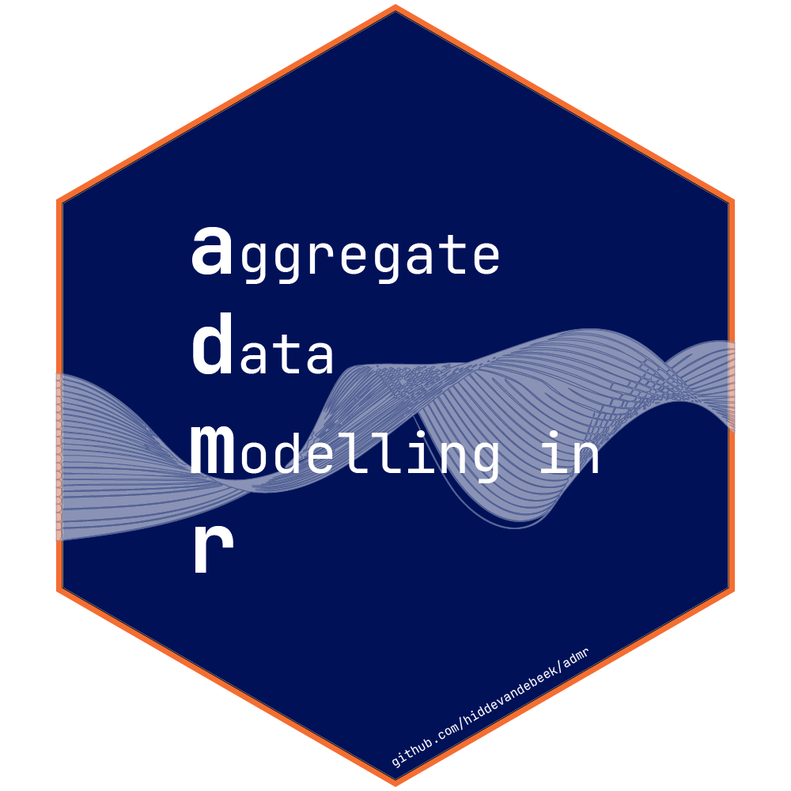

Fit aggregate data using Iterative Reweighting with Monte Carlo updates
Source:R/timedIRMC.R
timedIRMC.RdtimedIRMC implements the Iterative Reweighting (IRMC) algorithm for parameter estimation of
aggregate data models, iterating over maximum likelihood updates with weighted Monte Carlo
updates. This function is used to compare the performance of different implementations of
aggregate data modeling.
Arguments
- init
Initial parameter values for optimization. These should be transformed parameters as generated by
opts$pt.- opts
A list of model options generated by
genopts(). Contains settings for the model, including the prediction function, time points, parameter structure, and simulation settings.- obs
Observed data in aggregate form (mean and covariance) or as a matrix of raw data.
- maxiter
Maximum number of iterations for the optimization algorithm. Default is 100.
- convcrit_nll
Convergence criterion for the negative log-likelihood. The algorithm stops when the relative change in negative log-likelihood is less than this value. Default is 5e-04.
- nomap
Logical indicating whether to use multiple models (FALSE) or a single model (TRUE). Default is TRUE.
Value
A data frame containing:
p: List of parameter estimates for each iterationnll: Negative log-likelihood valuestime: Computation time for each iterationiter: Iteration number
Details
The function uses the Iterative Reweighting algorithm with Monte Carlo sampling for optimization. At each iteration, it generates Monte Carlo samples and updates the parameter estimates using weighted importance sampling. The algorithm continues until convergence or until the maximum number of iterations is reached.
Examples
# Load required libraries
library(admr)
library(rxode2)
library(nlmixr2)
library(dplyr)
library(tidyr)
library(mnorm)
# Load and prepare data
data(examplomycin)
examplomycin_wide <- examplomycin %>%
filter(EVID != 101) %>%
dplyr::select(ID, TIME, DV) %>%
pivot_wider(names_from = TIME, values_from = DV) %>%
dplyr::select(-c(1))
# Create aggregated data
examplomycin_aggregated <- examplomycin_wide %>%
admr::meancov()
# Define RxODE model
rxModel <- function(){
model({
# Parameters
ke = cl / v1 # Elimination rate constant
k12 = q / v1 # Rate constant for central to peripheral transfer
k21 = q / v2 # Rate constant for peripheral to central transfer
# Differential equations
d/dt(depot) = -ka * depot
d/dt(central) = ka * depot - ke * central - k12 * central + k21 * peripheral
d/dt(peripheral) = k12 * central - k21 * peripheral
# Concentration in central compartment
cp = central / v1
})
}
rxModel <- rxode2(rxModel)
#>
#>
#> ℹ parameter labels from comments are typically ignored in non-interactive mode
#> ℹ Need to run with the source intact to parse comments
rxModel <- rxModel$simulationModel
#>
#>
# Define prediction function
predder <- function(time, theta_i, dose = 100) {
n_individuals <- nrow(theta_i)
if (is.null(n_individuals)) n_individuals <- 1
ev <- eventTable(amount.units="mg", time.units="hours")
ev$add.dosing(dose = dose, nbr.doses = 1, start.time = 0)
ev$add.sampling(time)
out <- rxSolve(rxModel, params = theta_i, events = ev, cores = 0)
cp_matrix <- matrix(out$cp, nrow = n_individuals, ncol = length(time),
byrow = TRUE)
return(cp_matrix)
}
# Create options
opts <- genopts(
time = c(.1, .25, .5, 1, 2, 3, 5, 8, 12),
p = list(
beta = c(cl = 5, v1 = 10, v2 = 30, q = 10, ka = 1),
Omega = matrix(c(0.09, 0, 0, 0, 0,
0, 0.09, 0, 0, 0,
0, 0, 0.09, 0, 0,
0, 0, 0, 0.09, 0,
0, 0, 0, 0, 0.09), nrow = 5, ncol = 5),
Sigma_prop = 0.04
),
nsim = 2500,
n = 500,
fo_appr = FALSE,
omega_expansion = 1.2,
f = predder
)
# Run optimization
result <- timedIRMC(opts$pt, opts, examplomycin_aggregated)
#> iteration 1, nll=58.6588992213684
#> iteration 2, nll=10341.9586364684
#> iteration 3, nll=1104.31075202197
#> iteration 4, nll=-12.8879833023205
#> iteration 5, nll=-11.1290017827658
#> iteration 6, nll=941.446282903728
#> iteration 7, nll=-1497.18579116154
#> iteration 8, nll=-425.295334234436
#> iteration 9, nll=-1803.27581241957
#> iteration 10, nll=-1772.07716346781
#> iteration 11, nll=-1805.65893830117
#> iteration 12, nll=-1695.98638682688
#> iteration 13, nll=-1687.15231781426
#> iteration 14, nll=-1774.45676507279
#> iteration 15, nll=-1657.14784765482
#> iteration 16, nll=-1654.3274504209
#> iteration 17, nll=-1771.86754016153
#> iteration 18, nll=-1807.20356452465
#> iteration 19, nll=-1796.9824537236
#> iteration 20, nll=-1805.9461080557
#> iteration 21, nll=-1797.86193034384
#> iteration 22, nll=-1332.83140729753
#> iteration 23, nll=-1820.23600566369
#> iteration 24, nll=-1760.42766177474
#> iteration 25, nll=-1812.87532092798
#> iteration 26, nll=-1801.10305598602
#> iteration 27, nll=-1812.78849000454
#> iteration 28, nll=-1809.16525922786
#> iteration 29, nll=-1814.44512088359
#> iteration 30, nll=-1810.43611676214
#> iteration 31, nll=-1813.29835082529
#> iteration 32, nll=-1810.34994102804
#> iteration 33, nll=-1810.03804737302
#> iteration 34, nll=-1802.39632253627
#> iteration 35, nll=-1791.98919997279
#> iteration 36, nll=-1826.68306452637
#> iteration 37, nll=-1826.64004789598
#> iteration 38, nll=-1828.02645106082
#> iteration 39, nll=-1828.1015691943
#> iteration 40, nll=-1828.21733884237
#> iteration 41, nll=-1828.29043358985
#> iteration 42, nll=-1828.44630045947
#> iteration 43, nll=-1828.52426667595
#> iteration 44, nll=-1828.64309559905
#> iteration 45, nll=-1828.77199824666
#> iteration 46, nll=-1828.88151152219
#> iteration 47, nll=-1828.96717041834
#> iteration 48, nll=-1829.06479909718
#> iteration 49, nll=-1829.14000602857
#> iteration 50, nll=-1829.22270378688
#> iteration 51, nll=-1829.25557059339
#> iteration 52, nll=-1829.33992073968
#> iteration 53, nll=-1829.48659386701
#> iteration 54, nll=-1829.53881070554
#> iteration 55, nll=-1829.53681982548
#> iteration 56, nll=-1829.72367426162
#> iteration 57, nll=-1829.82025173375
#> iteration 58, nll=-1829.88672323276
#> iteration 59, nll=-1829.91980634316
#> iteration 60, nll=-1829.96005167663
#> iteration 61, nll=-1830.03947850286
#> iteration 62, nll=-1830.19538473418
#> iteration 63, nll=-1830.31680112044
#> iteration 64, nll=-1830.33140127361
#> iteration 65, nll=-1830.40141998097
#> iteration 66, nll=-1830.5092702487
#> iteration 67, nll=-1830.54928922228
#> iteration 68, nll=-1830.62370089206
#> iteration 69, nll=-1830.68989605196
#> iteration 70, nll=-1830.73164624016
#> iteration 71, nll=-1830.7835222873
#> iteration 72, nll=-1830.80648194059
#> iteration 73, nll=-1830.87018239345
#> iteration 74, nll=-1830.92154655952
#> iteration 75, nll=-1830.95604335502
#> iteration 76, nll=-1830.94050292191
#> iteration 77, nll=-1831.07436299337
#> iteration 78, nll=-1831.15161948981
#> iteration 79, nll=-1831.16870560674
#> iteration 80, nll=-1831.20777823348
#> iteration 81, nll=-1831.25249882516
#> iteration 82, nll=-1831.26704499517
#> iteration 83, nll=-1831.32825642844
#> iteration 84, nll=-1831.3632171053
#> iteration 85, nll=-1831.38392812226
#> iteration 86, nll=-1831.39019071963
#> iteration 87, nll=-1831.49687469327
#> iteration 88, nll=-1831.53713087251
#> iteration 89, nll=-1831.50479980111
#> iteration 90, nll=-1831.64977659356
#> iteration 91, nll=-1831.680880796
#> iteration 92, nll=-1831.68124454047
#> iteration 93, nll=-1831.67403573028
#> iteration 94, nll=-1831.73332085079
#> iteration 95, nll=-1831.79286658929
#> iteration 96, nll=-1831.78278321779
#> iteration 97, nll=-1831.84328660927
#> iteration 98, nll=-1831.82439428197
#> iteration 99, nll=-1831.83631387991
#> iteration 100, nll=-1831.95775584878
print(result)
#> # A tibble: 100 × 5
#> p nll appr_nll time iter
#> <list> <dbl> <dbl> <dttm> <dbl>
#> 1 <dbl [11]> 58.7 58.7 2026-05-12 14:52:58 1
#> 2 <dbl [11]> 10342. -1498. 2026-05-12 14:53:01 2
#> 3 <dbl [11]> 1104. -726. 2026-05-12 14:53:03 3
#> 4 <dbl [11]> -12.9 -1673. 2026-05-12 14:53:06 4
#> 5 <dbl [11]> -11.1 -1771. 2026-05-12 14:53:13 5
#> 6 <dbl [11]> 941. -1796. 2026-05-12 14:53:19 6
#> 7 <dbl [11]> -1497. -1813. 2026-05-12 14:53:25 7
#> 8 <dbl [11]> -425. -1816. 2026-05-12 14:53:31 8
#> 9 <dbl [11]> -1803. -1810. 2026-05-12 14:53:37 9
#> 10 <dbl [11]> -1772. -1808. 2026-05-12 14:53:40 10
#> # ℹ 90 more rows